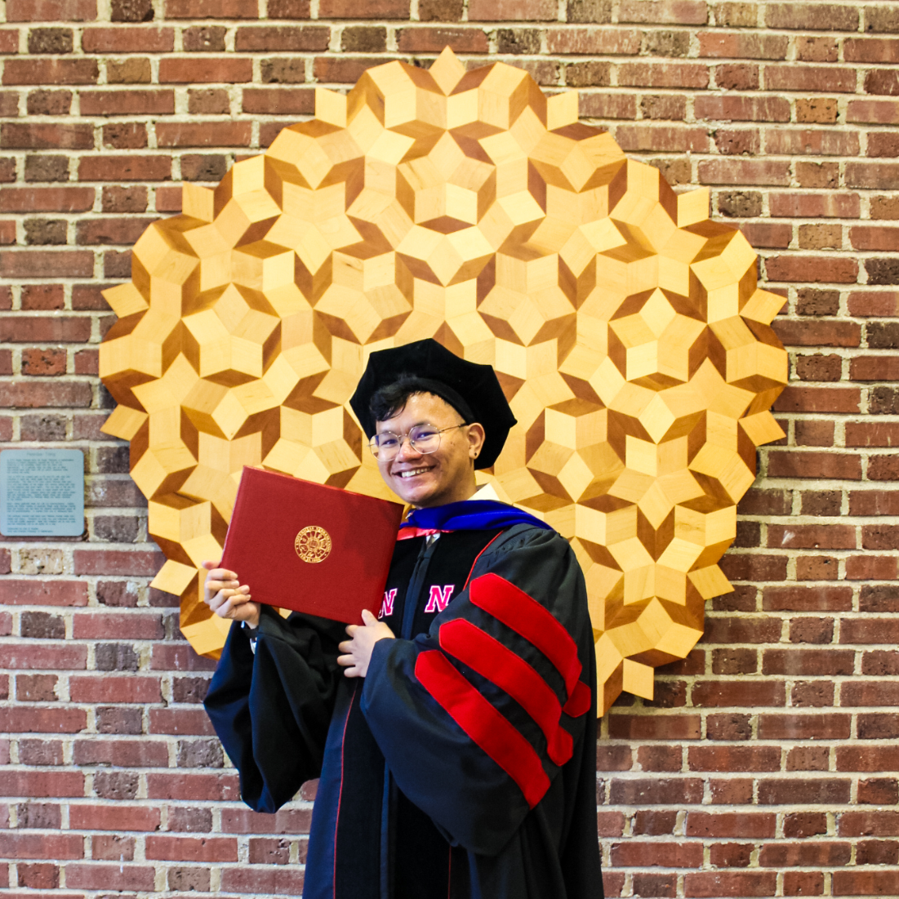

This page mostly serves to detail my research journey and highlight materials or videos of my research. Here is my curriculum vitae. Here is my dissertation, titled Culture and Context: How Frames of Teaching and of Learning Mathematics Form and Change for Graduate Student Instructors. This YouTube playlist contains all recordings of talks I have given, so far just in the Mathematics Education space.
I have come a long way in my journey to figure out what it is I want to do as a researcher. At first, I wanted to do partial differential equations research that modeled and animated solid-fluid interaction (initially inspired by the works by Professor Joseph M. Teran). Then, after a lot of turmoil during my first two years of graduate school, I found out that mathematics education research is what gets me out of my bed. It all started by asking a seemingly simple question: why do teachers teach the way that they do? I asked this to understand how cultures of exclusion in mathematics have perpetuated in classrooms for so long even though we, as a community, have been trying to combat this. For my dissertation, I developed a framework for understanding mathematics instructors' frames of teaching and of students' learning. You can read this essay I wrote about frames to learn more! This allowed me to peak into some of the reasons that motivate teachers' actions in the classroom. I was also fortunate to be involved with the several mathematics (or STEM) education research projects funded by the National Science Foundation, which you can read about in my CV. I owe a lot of my knowledge and expertise about critical methods of education research and applicable uses of research to these projects and mentors. But recently, after co-leading an applied mathematics research project through a summer Research Experience for Undergraduates in 2024 with another graduate student Michael Pieper, I was reminded of my interest in applied mathematics research. And now, as a visiting assistant professor, I am rekindling the fire of applied mathematics research. This time, instead of working to stand at the fronteir of PDEs or data science research, I would rather help mentor and advise students who do want to go onto treading new ground in applied mathematics and data science. And to combine the education research, I find myself extremely motivated to pursue the development of courses in data science to prepare future educators and data scientists. In short, I am moving forward in research with a mixture of mathematics education, applied mathematics, and data science—leveraging my experiences and perspectives to transform teachers', students', and departments' perceptions of what it means to do, teach, and learn mathematics in ways that promote equity and encourage diverse participation in the mathematical sciences. Along the way, mentoring students, student-teachers, and teachers through various projects in education, applied mathematics, and data science.
Reverse chronological order.